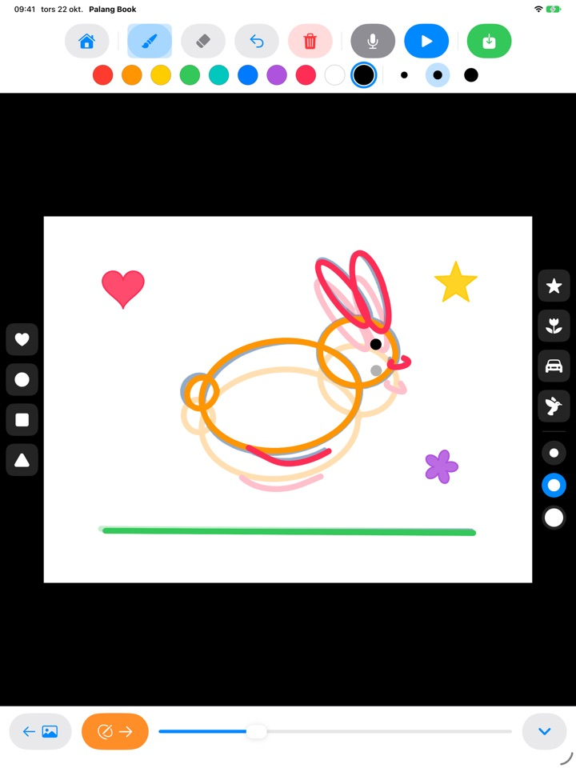
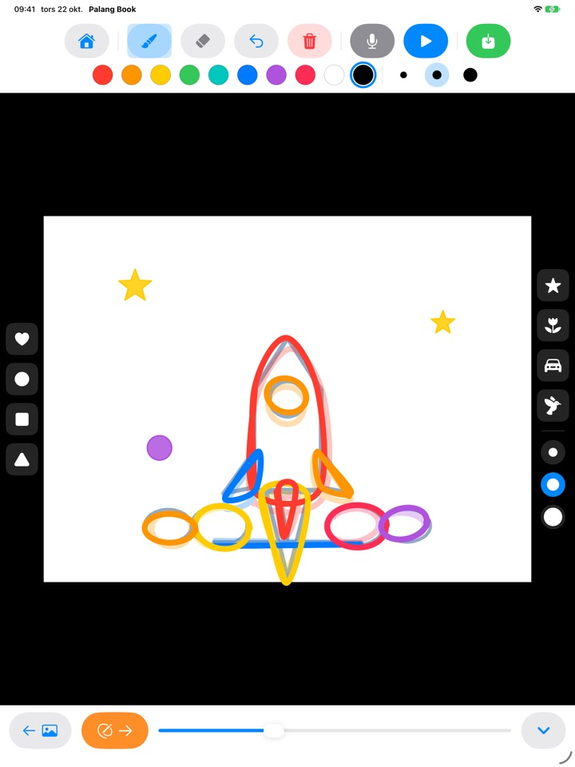
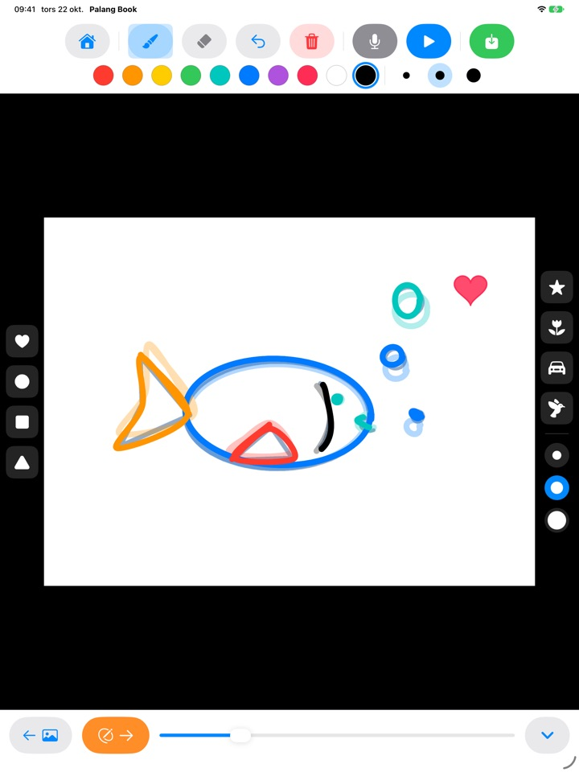
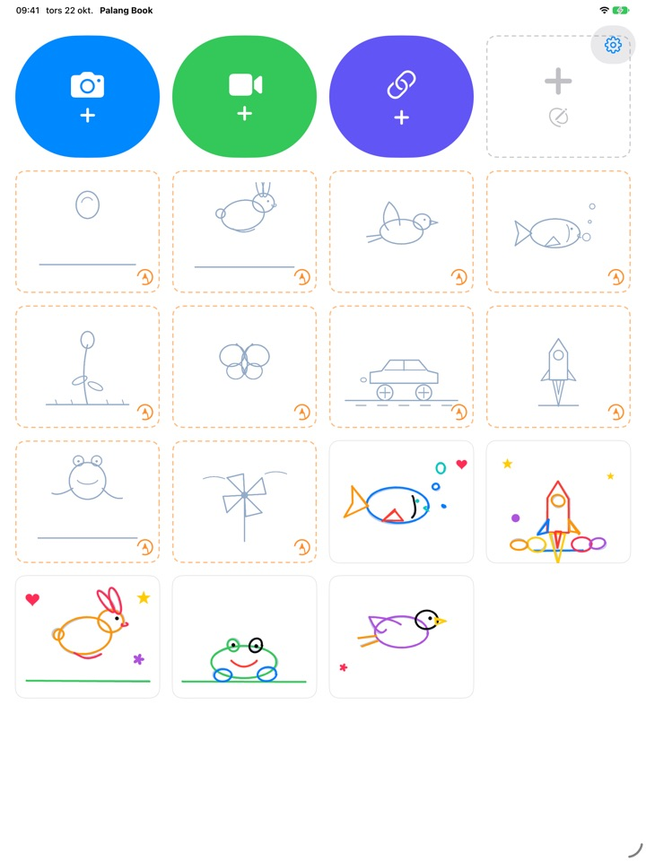

Rita av linjerna.
Se dem röra sig.
Barnet ritar av en ljus förlaga, en sida i taget. Tryck på spela upp så försvinner förlagan och bara barnets egna linjer rör sig. Alla knappar är bilder, så barnet klarar det på egen hand redan innan det kan läsa.
För iPad. Tre rita av-set är gratis.

Rita några sidor
Rita något och tryck på den orange pilen för nästa sida. Föregående sida skymtar svagt igenom. Efter två eller tre sidor trycker du på den blå uppspelningsknappen.
Synd att en fin teckning bara ska stå still, eller hur?
Animation innebär att rita nästan samma bild om och om igen med små ändringar, och på egen hand vet barn inte var de ska börja. Palang Book lägger fram en ljus förlaga där rörelsen redan finns, så barnet behöver bara följa linjen. Så fort barnet trycker på spela upp rör sig teckningen.
Följ linjen, så blir det animation
En studsande boll, en hoppande kanin, en flygande fågel, en simmande fisk, en blomma som slår ut, en fjäril, en racerbil, en raket, en groda och en vindsnurra. Varje set har cirka 20 sidor med förlagor.
Föregående sida skymtar svagt igenom så att nästa blir lätt att rita, och vid uppspelning försvinner förlagan så att bara barnets teckning rör sig.

Stämplar och tio färger
Stämpla hjärtan, cirklar, fyrkanter, trianglar, stjärnor, blommor, bilar och fåglar. Stämplar och penslar finns i tre storlekar, och det finns tio färger att välja bland.
Med suddgummi och ångra är misstag lätta att rätta till. Rita med fingret eller Apple Pencil.

Ovanpå egna videor, eller på tomt papper
Hämta in en video du spelat in själv eller en från Bilder och rita av ovanpå. Dölj bakgrunden så spelas bara de ritade scenerna upp efter varandra på vitt papper. Det finns också en tom flipbook helt utan förlaga.
Tryck på mikrofonen för att spela in barnets röst till animationen, och spara sedan verket som video i Bilder för att dela med familjen.

Tre steg för att komma igång
- 1
Tryck på ett förlagekort
Korten med orange streckad kant på startskärmen är rita av-set.
- 2
Rita och bläddra
Den orange pilen tar dig till nästa sida.
- 3
Tryck på spela upp
Tryck på den blå uppspelningsknappen så rör sig teckningen.
Vad knapparna gör
- Orange streckat kort
- Börja rita av
- Grått streckat kort
- Tom flipbook
- Blå kamera
- Rita ovanpå en video du spelar in
- Grön video
- Hämta in en video från Bilder
- Indigo länk
- Klistra in en länk till en videofil
- Orange pil
- Nästa sida
- Blå uppspelning
- Spela upp animationen, tryck igen för att stoppa
- Böjd pil
- Ångra den senaste linjen
- Röd papperskorg
- Rensa hela sidan (ångra tar tillbaka den)
- Mikrofon
- Spela in röst medan animationen loopar
- Videoikon
- Dölj videobakgrunden (rosa med streck: bara teckningar)
- Grön spara
- Spara som video i Bilder
Vill du radera ett verk trycker och håller du på kortet på startskärmen. Teckningarna, inspelningen och den inhämtade videon raderas samtidigt.
Mycket att prova gratis. Livstidsåtkomst om ni fastnar för det.
Gratis
- 3 rita av-set (boll, kanin, blomma)
- Spara 3 verk
- Hämta in 1 video
- Tomma flipbooks på upp till 10 sidor
- Röstinspelning i upp till 15 sekunder
- Stämplar, färger, penslar och sparande i Bilder
Livstidsåtkomst
- Alla rita av-set, även kommande
- Inga gränser för verk, sidor, videor eller inspelningstid
- Inget Palang Book-kort i slutet av sparade videor
Ett engångsköp, ingen prenumeration. Med Familjedelning fungerar det på alla familjens iPads.
Videor som sparas gratis slutar med ett kort Palang Book-kort. Använde du Palang Book innan Livstidsåtkomst fanns är allt redan upplåst för dig.
Frågor
Hur fungerar förlagorna?
De ljust himmelsblå linjerna är förlagan. Barnet ritar av dem, och när du trycker på spela upp försvinner förlagan och bara barnets linjer rör sig. Gör klart ungefär 20 sidor så är animationen färdig.
Jag vill spela upp och spara bara teckningen, utan videon.
I ett videoprojekt trycker du på videoikonen i verktygsfältet högst upp så att den blir rosa med ett streck över. Då visar både uppspelning och sparande bara teckningen mot vit bakgrund. Bara de ritade scenerna spelas upp, så några teckningar ovanpå ett långt klipp blir en kort animation.
Var hamnar den färdiga videon?
Tryck på den gröna sparaknappen längst till höger i verktygsfältet så sparas en mp4-video i Bilder. Tillåt åtkomst till Bilder första gången du sparar.
Hur lägger jag till en röst?
Tryck på mikrofonknappen för att spela in medan animationen loopar, och tryck på stopp för att avsluta. En ny inspelning ersätter den gamla. Rösten följer med när du sparar videon.
En videolänk öppnas inte.
Kontrollera internetanslutningen och se till att adressen pekar direkt på en videofil (som slutar på .mp4 eller liknande). Länkar till sidor på videodelningssajter går inte att öppna. Använd gärna videor du gjort själv eller som är fria att använda.
Handflatan lämnar hela tiden märken.
Den böjda pilen tar bort den senaste linjen och den röda papperskorgen rensar hela sidan (ångra tar tillbaka den). Händer det ofta, mejla oss så hjälper vi dig.
Varför kommer det ett räkneexempel före köpskärmen?
Så att barn inte kommer till köpskärmen på egen hand. När ett barn trycker på något som är låst visas ett stort hänglås och en uppmaning att visa det för en vuxen, och köpskärmen öppnas först när en vuxen har svarat på en multiplikation.
Hur återställer jag mitt köp?
Tryck på kugghjulet uppe till höger på startskärmen, välj Livstidsåtkomst, svara på vuxenfrågan och tryck på Återställ köp. Du måste vara inloggad med samma Apple-konto som du köpte med.
Hur skickar jag feedback från appen?
Tryck på kugghjulet på startskärmen och välj Skicka feedback. Du kan bifoga en skärmbild och lämna namn och e-post om du vill ha svar. Vi ber att en förälder skickar feedbacken.
Samlar ni in uppgifter om mitt barn?
Nej. Palang Book samlar inte in några personuppgifter, och teckningar och inspelningar stannar på din iPad. Läs mer i integritetspolicyn.
Frågor eller problem? Mejla mizzking75@gmail.com. Vi svarar oftast inom 2–3 dagar.